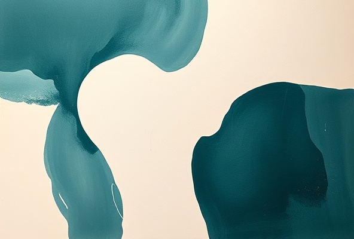
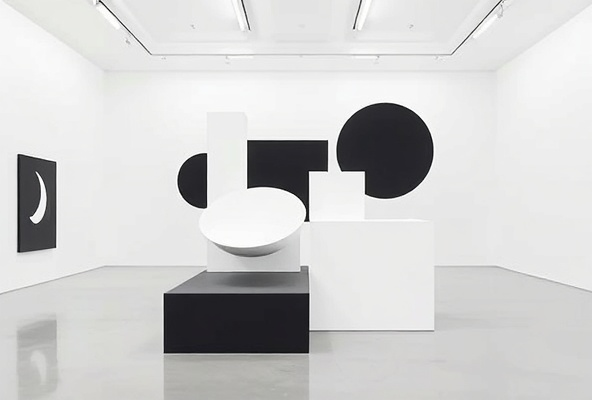
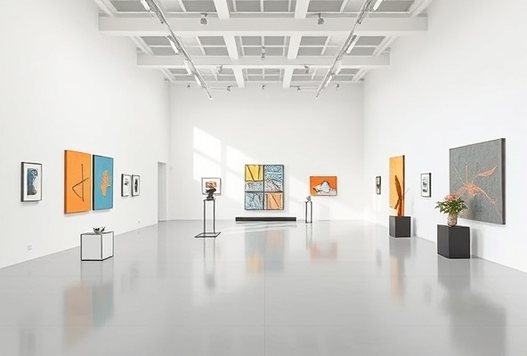

Meet the emerging and established artists whose work is featured in our exhibitions and events.

Painter and sculptor exploring geometric abstraction and spatial form.
View Profile
Contemporary artist working with installation and mixed media.
View ProfileMultimedia artist combining traditional and digital practices.
View Profile
Sculptor specializing in minimalist form and material exploration.
View ProfileInstallation artist creating site-specific works that engage with architectural space.
View ProfileArtist exploring sculpture and kinetic forms in public and gallery contexts.
View ProfilePainter and colorist focused on chromatic abstraction and expressive form.
View ProfileContemporary painter combining traditional and experimental techniques.
View Profile